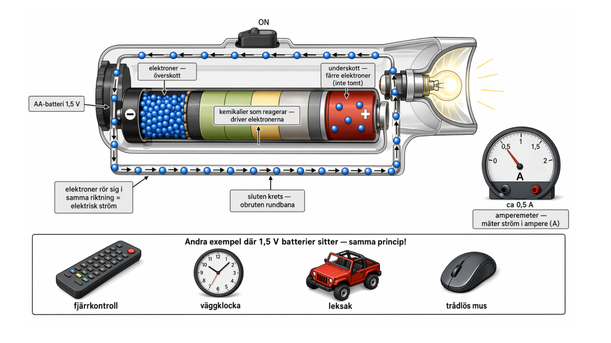

01
Begrepp
Vad menas med elektrisk ström?

Tänk dig att du tänder en ficklampa. På bilden ovan ser du de blå punkterna som rör sig genom sladden — det är elektroner. När du trycker på knappen lyser lampan direkt, eftersom alla dessa elektroner börjar röra sig i samma riktning genom hela kretsen.
Definitionen
Elektrisk ström är när elektroner rör sig i samma riktning genom en metalltråd.
Tre saker måste finnas för att ström ska kunna gå:
- Elektroner som kan röra sig fritt — finns naturligt i metaller som koppar och aluminium.
- Något som driver dem — en spänningskälla, t.ex. ett batteri (kort 2 och 4).
- En sluten krets — en obruten "rundbana" från batteriets minuspol, genom lampan, och tillbaka till pluspolen. Bryts kretsen någonstans (strömbrytaren av) → ingen ström.
Hur mäts ström?
Ström mäts i enheten ampere (A) med en amperemeter. För svaga strömmar används milliampere (mA): 1 A = 1 000 mA.
Namnet kommer från fransmannen André Marie Ampère, som studerade elektricitet på 1800-talet.
Källa i boken: 3.2 Spänning, ström och resistans, s. 47.
Visste du att...
- I ett vanligt blixtnedslag flödar runt 30 000 ampere — jämfört med din mobilladdare som bara drar runt 2 ampere. Det visar hur mycket den lilla siffran på laddaren faktiskt betyder.
- Bara 0,1 ampere genom kroppen kan stoppa hjärtat — det är därför vi har säkringar och jordfelsbrytare hemma som bryter strömmen om något går fel.